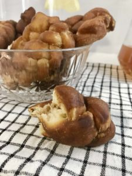

<?xml version="1.0" encoding="UTF-8"?><rss version="2.0"
	xmlns:content="http://purl.org/rss/1.0/modules/content/"
	xmlns:wfw="http://wellformedweb.org/CommentAPI/"
	xmlns:dc="http://purl.org/dc/elements/1.1/"
	xmlns:atom="http://www.w3.org/2005/Atom"
	xmlns:sy="http://purl.org/rss/1.0/modules/syndication/"
	xmlns:slash="http://purl.org/rss/1.0/modules/slash/"
	>

<channel>
	<title>Baking Powder &#8211; Levia Wegner</title>
	<atom:link href="" rel="self" type="application/rss+xml" />
	<link>../../../index.html</link>
	<description>Baking &#38; Happiness</description>
	<lastBuildDate>Fri, 13 Jun 2025 19:09:58 +0000</lastBuildDate>
	<language>en-US</language>
	<sy:updatePeriod>
	hourly	</sy:updatePeriod>
	<sy:updateFrequency>
	1	</sy:updateFrequency>
	<generator>https://wordpress.org/?v=6.8.2</generator>

<image>
	<url>../../../wp-content/uploads/2021/06/Levia-L2-150x150.png</url>
	<title>Baking Powder &#8211; Levia Wegner</title>
	<link>../../../index.html</link>
	<width>32</width>
	<height>32</height>
</image> 
	<item>
		<title>Carrot Cake</title>
		<link>../../../carrot-cake/index.html</link>
		
		<dc:creator><![CDATA[Levia Lydia Wegner]]></dc:creator>
		<pubDate>Sun, 26 Sep 2021 12:14:48 +0000</pubDate>
				<category><![CDATA[Baking Powder]]></category>
		<category><![CDATA[Cake]]></category>
		<category><![CDATA[Decoration]]></category>
		<category><![CDATA[Sweetness]]></category>
		<category><![CDATA[Asia]]></category>
		<category><![CDATA[Persia]]></category>
		<category><![CDATA[Sweet]]></category>
		<guid isPermaLink="false">https://www.leviawegner.com/?p=1196</guid>

					<description><![CDATA[Autumn, harvest, fall. Whatever you call it, it means apples, cinnamon, carrots and other distinct flavours. What better way to celebrate this season than a carrot cake?]]></description>
										<content:encoded><![CDATA[<p>Carrot cake as we know it today is believed to be from <strong>Persia</strong>, however using carrots in a cake was no unusual practice. Around the 15th century, sugar was scarce and expensive. Not many people could afford to buy and much less use large amounts of sugar. That is when carrots came in. The roots have a sweetness to them that could replace the sugar in the cake. Of course, nowadays we don&#8217;t have to rely on the sweetness of the root, but it still adds a nice flavour to the cake.</p>
<h2>Ingredients</h2>
<p>Cake base:</p>
<ul>
<li>400g Carrots</li>
<li>85g Crunchy Almonds</li>
<li>100g Flaked Almonds</li>
<li>200g Flour</li>
<li>1tsp Baking Powder</li>
<li>1 pinch Salt</li>
<li>4 Eggs</li>
<li>250g Sugar</li>
<li>100ml Sunflower Oil</li>
<li>5Tbsp Orange Juice</li>
<li>Butter for greasing</li>
</ul>
<p>Topping and decoration:</p>
<ul>
<li>200g Powdered Sugar</li>
<li>5 Tbsp Orange Juice</li>
<li>60g Fondant</li>
<li>Yellow, Red and Blue Food colouring</li>
</ul>
<h2>Instructions</h2>
<ol>
<li>Wash the carrots, cut their ends and grate them.</li>
<li>Add the almonds to the carrots.</li>
<li>Mix the baking powder and salt into the flour.</li>
<li>Pour the flour into the carrot almond mixture and stir well until the carrots are well coated.</li>
<li>Set the mixture aside and preheat the oven to 160ºC.</li>
<li>Separate the egg yolk from the whites.</li>
<li>Mix the oil, juice and sugar into the egg yolks.</li>
<li>Beat the egg whites until stiff.</li>
<li>Add the egg yolk mixture to the carrots stir well.</li>
<li>Fold in the egg whites.</li>
<li>Pour the batter into a greased cake pan.</li>
<li>Bake the cake for 50-55 minutes or until a toothpick comes out clean.</li>
</ol>
<p>Decoration and Topping</p>
<ol>
<li>While the cake is in the oven, prepare the decoration.</li>
<li>Separate 40g of fondant from the 60g and add yellow and red until obtaining the desired orange colour.</li>
<li>Add blue and yellow to the remaining 20g. Mix well until the fondant is the correct green colour.</li>
<li>Roll out the fondant. Fold the orange one in half.</li>
<li>Cut six pieces off the orange fondant.</li>
<li>Roll out the green fondant and cut thin strips from it.</li>
<li>Cut triangles into the green fondant and roll it up.</li>
<li>Shape the orange fondant into little carrots and cut thin lines into them.</li>
<li>Wet the base of the leaves and the top of the carrots and put them together. (notes)</li>
<li>Take the cake out of the oven and let it cool.</li>
<li>Mix the juice into the powdered sugar until well integrated.</li>
<li>Let the mixture thicken for a bit before pouring it over the cake.</li>
<li>Place the six carrots on the cake distributed evenly.</li>
<li>Serve and enjoy!</li>
</ol>
<h2>Notes</h2>
<p>Fondant: If the fondant gets too sticky when shaping it, wet it with a bit of water and sprinkle some powdered sugar.</p>
]]></content:encoded>
					
		
		
			</item>
		<item>
		<title>Coffee Cake</title>
		<link>../../../coffee-cake/index.html</link>
		
		<dc:creator><![CDATA[Levia Lydia Wegner]]></dc:creator>
		<pubDate>Mon, 30 Aug 2021 13:34:21 +0000</pubDate>
				<category><![CDATA[Baking Powder]]></category>
		<category><![CDATA[Cake]]></category>
		<category><![CDATA[Sweetness]]></category>
		<category><![CDATA[Europe]]></category>
		<category><![CDATA[Italy]]></category>
		<category><![CDATA[Sweet]]></category>
		<guid isPermaLink="false">https://www.leviawegner.com/?p=974</guid>

					<description><![CDATA[If you are looking for a trickier cake, something to really try your hand at baking and decorating, this is the cake for you. It is also extremely delicious and beautiful to look at. So why not give it a go?]]></description>
										<content:encoded><![CDATA[<p>Coffee Cake is believed to first have been made in Germany, however, this one is made with a mascarpone cream, making it attributable to <strong>Italy</strong>. Coffee cake wasn&#8217;t really invented, it was derived from other cakes. Mascarpone is originally from Italy and even got nominated the P.A.T. (Prodotto agroalimentare tradizionale or &#8220;traditional regional food product&#8221;) by the Italian government. This cake is made with a soft biscuit cake base and coffee flavoured mascarpone cream. It tastes similar to Tiramisu but is slightly heavier. It can be enjoyed whenever though it is best served cold so the cream doesn&#8217;t melt.</p>
<h2>Recipe</h2>
<h3>Ingredients</h3>
<p>Biscuit Cake (notes)</p>
<ul>
<li>6 Eggs</li>
<li>100g Flour</li>
<li>120g Cornstarch</li>
<li>200g Sugar</li>
<li>4Tbsp hot Water</li>
<li>1 1/2 Tbsp Instant Coffee</li>
</ul>
<p>For the soaking</p>
<ul>
<li>A cup of cold black coffee (notes)</li>
</ul>
<p>Mascarpone cream</p>
<ul>
<li>500g Mascarpone</li>
<li>800g Heavy cream</li>
<li>4Tbsp Icing Sugar</li>
<li>4tsp Instant Coffee</li>
<li>2Tbsp hot Water</li>
</ul>
<h3>Instructions</h3>
<ol>
<li>Beat the eggs until they have become fluffy.</li>
<li>Sift in the cornstarch, flour and sugar.</li>
<li>Make sure to mix well with an electric mixer to avoid clumps.</li>
<li>Integrate the instant coffee into the hot water before adding it into the batter.</li>
<li>Preheat the oven to 180ºC</li>
<li>But baking paper into a cake form and butter it.</li>
<li>Fill batter into the cake form.</li>
<li>Bake the cake for 30 minutes or until a toothpick stuck in the <strong>middle</strong> comes out clean.</li>
<li>Once the cake is done, take it out of the oven and use a long bread knife to cut it into three layers.</li>
<li>Leave the layers to cool while you prepare the mascarpone cream.</li>
<li>Use an electric mixer to mix the mascarpone and the heavy cream together.</li>
<li>Sift the icing sugar into the cream and mix well.</li>
<li>Separate the cream in two.</li>
<li>Mix the coffee into one of the halves.</li>
<li>Put the cream into the fridge for 30 minutes or until it is solid enough to be piped.</li>
<li>Place the cream into a piping bag with a round nozzle.</li>
<li>Use a baking brush to soak the cake base with the black coffee.</li>
<li>Pipe circles or spirals in both colours on the cake.Cool the cream before decorating the cake.</li>
</ol>
<p></p>
<ol start="19">
<li>Place the creams into piping bags with star nozzles and pipe the decorations.</li>
<li>Pipe the top in circles changing the colours.</li>
<li>For the side, start piping from the bottom and pull the piping bag up without lifting the bag to form the pattern of the white cream in the image below.</li>
</ol>
<p></p>
<ol start="22">
<li>Place the cake in the fridge for several hours or until serving.</li>
</ol>
<h3>Notes</h3>
<p>Biscuit cake: This is a tricky type of cake. It is easy to get something wrong. In fact, I have had huge trouble with it before. Sometimes it is not completely done in the middle. So make sure to do the toothpick trial exactly in the centre and don&#8217;t take the cake out too soon. If you take it out and put it back in too many times, it will collapse and become dry. Make sure the eggs are correctly beaten so you get the right texture. It should be fluffy on the inside.</p>
<p>Coffee: There is a distinct difference in the taste of instant coffee versus a good blend. This coffee&#8217;s main taste is coffee. So it is important to use a good coffee for the soak. Instant coffee is best for cream or the cake itself but I much prefer using coffee made with a coffee machine rather than instant coffee for the soak. It has a stronger more distinct taste to it.</p>
]]></content:encoded>
					
		
		
			</item>
		<item>
		<title>Brownies</title>
		<link>../../../brownies/index.html</link>
		
		<dc:creator><![CDATA[Levia Lydia Wegner]]></dc:creator>
		<pubDate>Tue, 17 Aug 2021 13:51:59 +0000</pubDate>
				<category><![CDATA[Baking Powder]]></category>
		<category><![CDATA[Sweetness]]></category>
		<category><![CDATA[Sweet]]></category>
		<category><![CDATA[USA]]></category>
		<category><![CDATA[Walnuts]]></category>
		<guid isPermaLink="false">https://www.leviawegner.com/?p=864</guid>

					<description><![CDATA[Everyone knows brownies, but there are several things about them you might not know. Check out this post for further insights on this treat and the recipe for it.]]></description>
										<content:encoded><![CDATA[<p>Brownies are always linked to the <strong>USA</strong>. The treat is known for its rich chocolate flavour and crispy outside with a soft interior texture. Despite how popular they are, many people wonder where the brownie first came from. So much so, that people have put together <a href="http://www.newenglandrecipes.org/html/brownies.html">compilations of mentions of brownies</a>. Brownies are said to have first appeared in the early 20th century, more specifically, in of Fannie Farmer&#8217;s cookbook in 1896. The original brownies were very different from what we perceive as brownies today. They did, in fact, not contain any chocolate and were flavoured with molasses. The chocolate first found its way into the mix in 1898 when the Kansas City Journal mentioned them. From there on, chocolate brownies started appearing all over in advertisements and bakeries. The first mention of chocolate brownies in a cookbook was in 1899 in the Machias Cook Book. The there featured recipe is much more similar to the one we use today.</p>
<h2>Recipe</h2>
<h3>Ingredients</h3>
<ul>
<li>100g Flour</li>
<li>200g Sugar</li>
<li>100g Brown Sugar</li>
<li>75g Cocoa Powder</li>
<li>100g Bittersweet Chocolate</li>
<li>80ml Milk</li>
<li>85g Butter</li>
<li>1/2 tsp Baking Powder</li>
<li>1tsp Vanilla Extract</li>
<li>2 large Eggs</li>
<li>75g chopped Walnuts (optional)</li>
<li>Powdered Sugar (optional)</li>
</ul>
<h3>Instructions</h3>
<ol>
<li>Preheat the oven to 180ºC.</li>
<li>Sift flour, sugar, baking powder, cocoa powder together in a large bowl. Mix in the brown sugar.</li>
<li>Chopp the chocolate into small chunks.</li>
<li>Melt half the chocolate and butter over low heat.</li>
<li>Mix the milk and vanilla into the melted chocolate.</li>
<li>Add the eggs, milk-chocolate mixture and the other half of the chocolate to the dry ingredients.</li>
<li>Use an electric mixer to stir until obtaining a smooth batter.</li>
<li>Mix in half of the chopped walnuts.</li>
<li>Fill the batter into a squared baking pan and sprinkle with the rest of the walnuts.</li>
<li>Bake for 20-25 minutes or until the pick comes out smooth.</li>
<li>Leave to cool before removing from the pan.</li>
<li>Cut around the corners with a sharp knife.</li>
<li>Sprinkle with a bit of powdered sugar and enjoy!</li>
</ol>
<h3>Variations</h3>
<p>If you are not a great fan of walnuts, you can either replace them with a different type of nuts or just leave them out.</p>
<p>&nbsp;</p>
]]></content:encoded>
					
		
		
			</item>
		<item>
		<title>Apple Blondies</title>
		<link>../../../apple-blondies/index.html</link>
		
		<dc:creator><![CDATA[Levia Lydia Wegner]]></dc:creator>
		<pubDate>Tue, 10 Aug 2021 19:13:36 +0000</pubDate>
				<category><![CDATA[Baking Powder]]></category>
		<category><![CDATA[Sweetness]]></category>
		<category><![CDATA[USA]]></category>
		<category><![CDATA[White Chocolate]]></category>
		<guid isPermaLink="false">https://www.leviawegner.com/?p=861</guid>

					<description><![CDATA[Chewy goodness with a decent portion of fruit. These blondies will melt your hearts with their chocolaty sweetness and they're apply freshness. ]]></description>
										<content:encoded><![CDATA[<p>Just like brownies, blondies originated in the <strong>USA</strong>. Did you know, the 22nd of January is a day dedicated to celebrating this delicious treat. Even though you might think that blondies and brownies are similar just with different chocolates. Well, not quite. Brownies are known to have a crispy exterior. Blondies, on the other side, are known to be more alike fudge. They are soft and chewy and extremely sweet. The first brownies, made with molasses, are nearly identical to those we now call blondies. So, it seems, all this time we have been thinking wrongly of this desert. They are not derived from brownies. We&#8217;ve given the wrong treat all the credit.</p>
<h2>Recipe</h2>
<h3>Ingredients</h3>
<p>Blondie</p>
<ul>
<li>200g Light Brown Sugar</li>
<li>120g Butter</li>
<li>1 Egg</li>
<li>140g Flour</li>
<li>1 pinch Salt</li>
</ul>
<p>Filling</p>
<ul>
<li>20g Butter</li>
<li>60g chopped, peeled Apples</li>
<li>240g diced Toffee</li>
<li>20g Flour</li>
<li>1/2 tsp ground Cinnamon</li>
</ul>
<p>Frosting</p>
<ul>
<li>120g Butter</li>
<li>240g Powdered Sugar</li>
<li>80g Caramel Sauce</li>
<li>30g Heavy Cream</li>
<li>30g diced Toffee</li>
</ul>
<h3>Instructions</h3>
<ol>
<li>Use an electric mixer to mix the butter until creamy.</li>
<li>Add in the brown sugar and the egg and mix until well incorporated.</li>
<li>Sift in the flour with a pinch of salt.</li>
<li>Mix well to make sure there are no clumps left.</li>
<li>Grease a squared bake tin lined with baking paper.</li>
<li>Preheat the oven to 180ºC.</li>
<li>Fill the batter into the tin and use a spatula to spread it.</li>
<li>Melt the butter and mix in the flour and cinnamon.</li>
<li>Mix the apple and caramel into the butter mixture.</li>
<li>Put the filling on the base and spread well.</li>
<li>Bake for 25-30 minutes.</li>
<li>Beat the butter until smooth and sift in the powdered sugar.</li>
<li>Add in the heavy cream and the caramel sauce.</li>
<li>Beat until reaching desired consistency before mixing in the toffee.</li>
<li>Take the blondies out of the oven and let cool.</li>
<li>Spread the frosting on the blondies.</li>
<li>Cut into squares and enjoy.</li>
</ol>
<p>&nbsp;</p>
]]></content:encoded>
					
		
		
			</item>
		<item>
		<title>Fig and Bacon cake</title>
		<link>../../../fig-and-bacon-cake/index.html</link>
		
		<dc:creator><![CDATA[Levia Lydia Wegner]]></dc:creator>
		<pubDate>Tue, 10 Aug 2021 19:09:57 +0000</pubDate>
				<category><![CDATA[Baking Powder]]></category>
		<category><![CDATA[Cake]]></category>
		<category><![CDATA[Meat]]></category>
		<category><![CDATA[Savoury]]></category>
		<category><![CDATA[Greece]]></category>
		<category><![CDATA[Yoghurt]]></category>
		<guid isPermaLink="false">https://www.leviawegner.com/?p=869</guid>

					<description><![CDATA[This delicious savoury cake will be perfect to accompany your picnic. Or maybe you can serve a slice for breakfast? Whatever the occasion, this is a truly marvellous snack.]]></description>
										<content:encoded><![CDATA[<p>A friend brought over fresh figs, just as if she had picked it from a tree on the mountainside facing the Mediterranean sea in <strong>Greece</strong>. I didn&#8217;t have to think long about what to do with them, because this recipe had been sitting in the back of my mind for a while. The crispy salty bacon and the texture of the figs form the perfect harmony. One can only imagine how this treat was enjoyed by the philosophers of old. Add a spoonful of greek yoghurt to serve and enjoy!</p>
<p>Figs are commonly known to be of greek origin, however, figs first originated in Asia and only spread through Europe with the Greeks and Romans. Fig trees can live up to 100 years and grow up to fifty feet, although most only grow 10 to 30 feet. Bacon, on the other hand, was used during the 16th century by the English to refer to all pork. The salted pork however, appeared much earlier in China. Both these star ingredients in the following recipe have an old and elaborate history. This recipe is called a cake, not because it is sweet, but because the texture and the batter are that of a cake. It results in an extremely delicious creation. But, don&#8217;t take my word for it, try it yourself!</p>
<h2>Recipe</h2>
<h3>Ingredients</h3>
<ul>
<li>3 Eggs</li>
<li>100ml Sunflower Oil</li>
<li>180g Flour</li>
<li>1 package Baking Powder</li>
<li>20ml Milk</li>
<li>100g Greek Yogurt</li>
<li>200g fresh Figs</li>
<li>100g Bacon</li>
<li>100g Emmentaler, grated</li>
<li>Salt | Pepper | Sugar</li>
</ul>
<h3>Instructions</h3>
<ol>
<li>Put baking paper in a long cake tin and preheat the oven to 180ºC.</li>
<li>Mix the eggs and oil together with an electric mixer until they are fluffy.</li>
<li>Slowly sift in the flour, baking powder and sugar.</li>
<li>Pour in the milk and mix well with an electric mixer to make sure no clumps are left.</li>
<li>Wash the figs and cut them into thin slices.</li>
<li>Cut the bacon into thin strips.</li>
<li>Mix the bacon, figs and cheese into the batter. Add salt and pepper to taste.</li>
<li>Pour the batter into the cake tin and spread it well.</li>
<li>Bake the cake at 160ºC fan for about 45 minutes or until golden-yellow.</li>
<li>Cut into slices and enjoy!</li>
</ol>
<p>&nbsp;</p>
]]></content:encoded>
					
		
		
			</item>
		<item>
		<title>Chocolate Chip Pfannkuchen</title>
		<link>../../../chocolate-chip-pfannkuchen/index.html</link>
		
		<dc:creator><![CDATA[Levia Lydia Wegner]]></dc:creator>
		<pubDate>Thu, 05 Aug 2021 16:22:21 +0000</pubDate>
				<category><![CDATA[Baking Powder]]></category>
		<category><![CDATA[Breakfast]]></category>
		<category><![CDATA[Sweetness]]></category>
		<category><![CDATA[Europe]]></category>
		<category><![CDATA[Germany]]></category>
		<category><![CDATA[Sweet]]></category>
		<guid isPermaLink="false">https://www.leviawegner.com/?p=858</guid>

					<description><![CDATA[If you are in charge of making breakfast today, try this simple and delicious recipe. It can be changed for every picky eater. Give it a try!]]></description>
										<content:encoded><![CDATA[<p>There are many typically german breakfasts but in <strong>Germany</strong>, there is also a variant of the well known pancakes. Pancakes in general reach as far back as the Stone Age. It has appeared often in literature and everyone can visualise a pancake. However, over time, each region or country went adapting the familiar recipe and presenting it in different ways. The following recipe is the German version of this very nutritious food. It is a very easy recipe and, who doesn&#8217;t enjoy a nice Pfannkuchen for breakfast?</p>
<h2>Recipe</h2>
<h3>Ingredients</h3>
<ul>
<li>300g Flour</li>
<li>300ml Milk</li>
<li>2 Egg</li>
<li>6Tbsp Sugar</li>
<li>2tsp Vanilla Extract</li>
<li>pinch Salt</li>
<li>1 1/2 Tbsp Chocolate Chips</li>
</ul>
<h3>Instructions</h3>
<ol>
<li>Mix the salt, sugar and flour.</li>
<li>Whisk the eggs into the milk and add the vanilla extract.</li>
<li>Use an electric mixer to mix the milk mixture into the flour.</li>
<li>Mix well to make sure there are no clumps left.</li>
<li>Integrate the chocolate chips into the batter.</li>
<li>Melt a bit of butter in a small pan.</li>
<li>Pour some of the batter into the centre of the pan and let it fill the pan.</li>
<li>Cook on low heat until bubbles form on the top and it is mostly cooked through.</li>
<li>Flip the pancake and cook for a few more minutes.</li>
<li>Transfer onto a plate.</li>
<li>And enjoy with whatever you like best!</li>
</ol>
<h3>Variations</h3>
<p>Similar to American pancakes or Crepes, Pfannkuchen can be enjoyed with whatever you like best. From caramel sauce and whipped cream to nutella.</p>
<p>If you want to make savoury Pfannkuchen, you can leave out the chocolate chips or substitute them for bacon.</p>
<p>&nbsp;</p>
]]></content:encoded>
					
		
		
			</item>
		<item>
		<title>Pancakes</title>
		<link>../../../pancakes/index.html</link>
		
		<dc:creator><![CDATA[Levia Lydia Wegner]]></dc:creator>
		<pubDate>Tue, 03 Aug 2021 15:53:26 +0000</pubDate>
				<category><![CDATA[Baking Powder]]></category>
		<category><![CDATA[Breakfast]]></category>
		<category><![CDATA[Sweetness]]></category>
		<category><![CDATA[North America]]></category>
		<category><![CDATA[Sweet]]></category>
		<category><![CDATA[USA]]></category>
		<guid isPermaLink="false">https://www.leviawegner.com/?p=845</guid>

					<description><![CDATA[Looking for breakfast ideas? This recipe is for you. Make some delicious pancakes for you and your family to enjoy!]]></description>
										<content:encoded><![CDATA[<p>Everyone has at least heard about the legendary pancakes from the <strong>USA</strong>. Did you know that pancakes date back 30.000 years? All the way to the Stone Age? They even been mentioned by Shakespeare. They are known all around the world although, the recipe tends to vary slightly. The American variant, pancakes is usually recognised as a small but fluffy breakfast treat that can be eaten with anything. From nutella and fruit to bacon and syrup. It is actually quite easy to make and, with the following recipe, you can make it yourself. Go ahead and give it a try.</p>
<h2>Recipe</h2>
<h3>Ingredients</h3>
<ul>
<li>150g Flour</li>
<li>140ml Milk</li>
<li>1tsp Baking Powder</li>
<li>1/2tsp Salt</li>
<li>2Tbsp Sugar (for a stronger taste, use brown sugar)</li>
<li>1large Egg</li>
<li>2Tbsp melted Butter</li>
</ul>
<h3>Instructions</h3>
<ol>
<li>Sift the flour, baking powder, salt and sugar together into a large bowl.</li>
<li>Lightly beat the egg in a seperate bowl.</li>
<li>Mix the butter, egg and milk into the dry ingredients.</li>
<li>Mix well with a whisk or electric mixer until no clumps are left.</li>
<li>Pour a bit of sunflower oil into a pan or melt some butter.</li>
<li>Use a big spoon to put some batter into the center of the pan. Pour it in the middle so it forms a circle.</li>
<li>Let it bake until little bubbles start to appear on the top.</li>
<li>Flip the pancake and bake for a few more minutes before tranfering onto a plate.</li>
<li>Stack the pancakes and use your favorite topping.</li>
</ol>
<h3>Variations</h3>
<p>If you prefer your pancakes to have a more neutral taste use white sugar. You can always add a bit of vanilla extract to boost the flavour.</p>
]]></content:encoded>
					
		
		
			</item>
		<item>
		<title>Koeksisters</title>
		<link>../../../koeksisters/index.html</link>
		
		<dc:creator><![CDATA[Levia Lydia Wegner]]></dc:creator>
		<pubDate>Sun, 01 Aug 2021 13:30:17 +0000</pubDate>
				<category><![CDATA[Baking Powder]]></category>
		<category><![CDATA[Sweetness]]></category>
		<category><![CDATA[Africa]]></category>
		<category><![CDATA[South Africa]]></category>
		<category><![CDATA[Sweet]]></category>
		<guid isPermaLink="false">https://www.leviawegner.com/?p=826</guid>

					<description><![CDATA[This delicious plated treat will not only look gorgeous but taste delicious too. Soaked in ice cold syrup it makes everyone's mouth water. Go ahead and give it a try!]]></description>
										<content:encoded><![CDATA[<p></p>
<p>There are many recipes from <strong>South Africa</strong>. This is one of them, a very delicious one. The word koeksister is said to be derived from a tale of two sisters who would sit plaiting this pastry. It is pronounced &#8220;cook sister&#8221;. It consists of a simple dough that is cut into rectangles that are themselves divided into three strings and then plaited. The dough itself is not sweet and what gives it its sweetness is the syrup it is soaked in. The outcome is absolutely beautiful treats that are easy and fun to make. So, let&#8217;s give it a try!</p>
<h2>Recipe</h2>
<h3>Ingredients</h3>
<ul>
<li>250g Flour</li>
<li>12g Baking Powder</li>
<li>10g Butter</li>
<li>1 Egg</li>
<li>100ml Water</li>
</ul>
<p>For the syrup</p>
<ul>
<li>400ml Water</li>
<li>750g Sugar</li>
<li>5g Cream of Tartar (1 pckg)</li>
<li>20ml Lemon juice</li>
</ul>
<h3>Instructions</h3>
<ol>
<li>Mix the baking powder into the flour.</li>
<li>Rub in the butter with your fingertips until obtaining a crumbly texture.</li>
<li>Add the egg and some water and stir with a fork.</li>
<li>Add more water until obtaining a slightly sticky texture. You might not have to use all of the water.</li>
<li>Knead the dough until it is no longer sticky.</li>
<li>Leave the dough to rest for 30 minutes.</li>
<li>Heat the water and mix in the sugar and cream of tartar.</li>
<li>When the sugar and cream of tartar are disolved, mix in the lemon juice and leave to simmer for another 10 minutes.</li>
<li>Place the syrup in a metal bowl or small pot before placing it on ice cubes.</li>
<li>After 30 minutes, take the dough and roll it out until it is about 1/2 cm thick.</li>
<li>Cut the dough into 10cm long and 3cm wide rectangles.</li>
<li>Cut 1cm thick strips into the rectangles leaving one side closed.</li>
<li>Plait the strips pushing down on the ends to make sure they don&#8217;t come apart when frying.</li>
<li>Heat oil in a deep pot and fry the koeksisters until golden brown.</li>
<li>When removing them from the oil, place them on kitchen paper before soaking them in the ice cold syrup.</li>
<li>And enjoy!</li>
</ol>
]]></content:encoded>
					
		
		
			</item>
		<item>
		<title>Chin chin</title>
		<link>../../../chin-chin/index.html</link>
		
		<dc:creator><![CDATA[Levia Lydia Wegner]]></dc:creator>
		<pubDate>Sun, 01 Aug 2021 12:21:23 +0000</pubDate>
				<category><![CDATA[Baking Powder]]></category>
		<category><![CDATA[Sweetness]]></category>
		<category><![CDATA[Africa]]></category>
		<category><![CDATA[Nigeria]]></category>
		<category><![CDATA[Sweet]]></category>
		<guid isPermaLink="false">https://www.leviawegner.com/?p=818</guid>

					<description><![CDATA[This is the perfect snack for you to munch on while watching a movie or just serve as an apperitive. It is crunchy and has a rich flavour.]]></description>
										<content:encoded><![CDATA[<p>Chin chin is a delicious treat from <strong>Nigeria</strong>. It has a distinct taste of cinnamon and can be crunchy or slightly soft on the inside. The dough is easy and fun to make and it takes little time. For those of you who do not own a deep fryer, do not fret. You can use a pot with oil, in fact, that is what I do. Let&#8217;s get started!</p>
<h2>Recipe</h2>
<h3>Ingredients</h3>
<ul>
<li>420g Flour</li>
<li>100g Sugar</li>
<li>1 Egg</li>
<li>40g Butter</li>
<li>1/2 tsp Baking Powder</li>
<li>1 tsp Cinnamon</li>
<li>160ml Milk</li>
<li>pinch Salt</li>
</ul>
<h3>Intructions</h3>
<ol>
<li>Sift the flour, sugar, baking powder, cinnamon and salt into a bowl.</li>
<li>Melt the butter, add the egg and melted butter to the dry ingredients.</li>
<li>Mix first with a whisk or spatula and then with your fingers until achieving a crumbly texture.</li>
<li>Add in the milk bit by bit to make sure the consistency is correct. Do not add all the milk at once!</li>
<li>When the dough has achieved a good consistency, so you can kneed it by hand, transfer it onto a clean surface and kneed until it is no longer sticky. You will know whether the dough is ready by pressing down on it with a finger and the dough will come back up.</li>
<li>Leave the dough to rest for 30 minutes.</li>
<li>Separate the dough into two and place it on a floured surface.</li>
<li>Roll out the dough until it is about 1/2 cm thick. (The thicker the dough, the softer the inside will be.)</li>
<li>Cut the dough into 1 cm thin strips and then into squares.</li>
<li>Heat the oil in a deep pot. (Use a small piece of dough to test the temperature. When it starts to flout and there are bubbles around it, the oil should be at the right heat.)</li>
<li>Place the chin chin in the oil and keep stirring with a laddle.</li>
<li>When the chin chin have aquired a nice golden brown colour, remove them from the oil and place them on kitchen paper to soak up some of the oil.</li>
<li>Repeat the process with the other half of the dough.</li>
<li>And you&#8217;re done!</li>
</ol>
<h3></h3>
]]></content:encoded>
					
		
		
			</item>
		<item>
		<title>Banana cake &#8211; healthier</title>
		<link>../../../banana-cake-healthier/index.html</link>
		
		<dc:creator><![CDATA[Levia Lydia Wegner]]></dc:creator>
		<pubDate>Sun, 01 Aug 2021 11:35:49 +0000</pubDate>
				<category><![CDATA[Baking Powder]]></category>
		<category><![CDATA[Sweetness]]></category>
		<category><![CDATA[Sweet]]></category>
		<guid isPermaLink="false">https://www.leviawegner.com/?p=431</guid>

					<description><![CDATA[A vegan cake?! Yes indeed. This cake base is perfect for all your creations. You will love this recipe as it is quick, easy and the outcome is delicious.]]></description>
										<content:encoded><![CDATA[<p>Looking for a cake base for your vegan cake right from <strong>Home</strong>? This is the recipe for you. It allows for loads of variations. Whether you decide to counter the sweetness with cream cheese or enhance it by adding a coconut buttercream frosting. What ever frosting you can dream up is bound to go well with this cake. So, just enjoy baking it!</p>
<h2>Recipe</h2>
<h3>Ingredients</h3>
<ul>
<li>125g Coconut butter (cold coconut oil)</li>
<li>225g Wholegrain flour</li>
<li>150g Raw cane sugar</li>
<li>1 1/2 Bananas</li>
<li>1tsp Baking powder</li>
<li>pinch of Salt</li>
<li>1tsp Bourbon vanilla</li>
</ul>
<h3>Instructions</h3>
<ol>
<li>Using a fork, mix the coconut butter until smooth and add in the sugar and salt.</li>
<li>Mash the banana either using a fork or a blender.</li>
<li>Mix the vanilla and baking powder into the flour and spoon the flour into the butter mixture.</li>
<li>Pour half of the batter into a baking tray.</li>
<li>Bake the cake for 15 minutes at 170ºC.</li>
<li>Leave the cakes to cool.</li>
</ol>
<h3></h3>
<p>&nbsp;</p>
]]></content:encoded>
					
		
		
			</item>
	</channel>
</rss>

<!-- plugin=object-cache-pro client=phpredis metric#hits=894 metric#misses=5 metric#hit-ratio=99.4 metric#bytes=585474 metric#prefetches=0 metric#store-reads=54 metric#store-writes=3 metric#store-hits=109 metric#store-misses=2 metric#sql-queries=4 metric#ms-total=611.17 metric#ms-cache=48.61 metric#ms-cache-avg=0.8681 metric#ms-cache-ratio=8.0 -->
